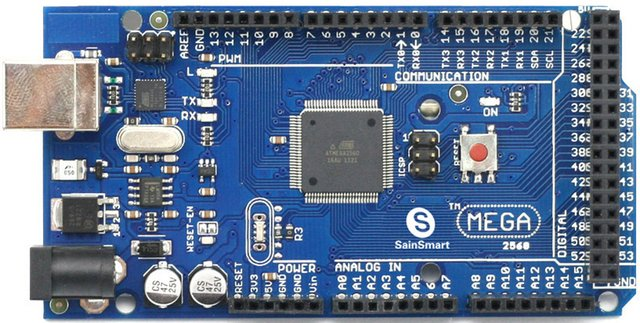

O Arduino é uma plataforma de prototipagem open-source, seu software multiplataforma é flexível e fácil de usar. Ele é destinado para pessoas interassadas em criar objetos ou ambientes interativos. Com o arduino você pode interagir com luzes, motores entre outros objetos eletrônicos.
A placa de um Arduino consiste em um microcontrolador ATMEL, com componentes complementares para facilitar a programação e incorporação para outros circuitos.
A versão mais popular e mais vendida de toda a linha é o Arduino UNO, além de servir como base para outros modelos, como o Arduino MEGA 2560 por exemplo.
A Arduino IDE é uma ferramenta de desenvolvimento multiplataforma escrita em Java, com uma interface gráfica e simples de usar, mas que também possui flexibilidade para os usuários mais experientes. É um programa que reúne características e ferramentas para agilizar o processo de desenvolvimento de software.